Table
GRID · A table that records the same items multiple times
What is a Table field?
- 1.1Adding a field and the property panel layout
1.1Adding a field and the property panel layout
Overview
Table (GRID) is a table that records the same items multiple times. Use it for data where you cannot know in advance how many entries there will be, such as concomitant medications. The biggest difference from other types is the authoring order — you first define the table's columns Ch. 3, and rows are added by the recorder on the entry screen. Until columns are defined, this field cannot accept anything.
Screen guide
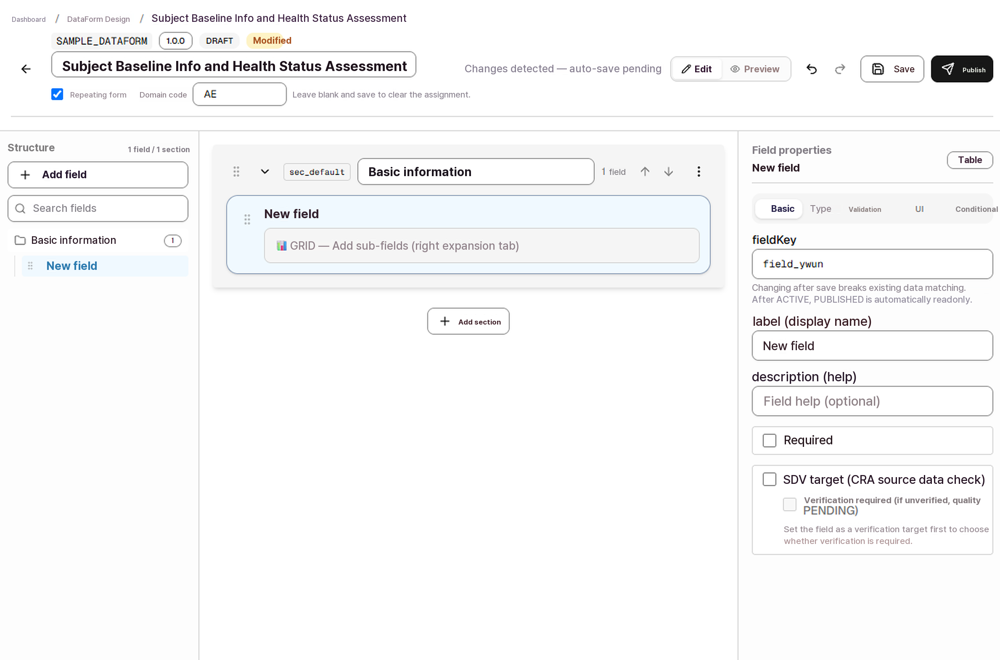
[+ Add field] — Specify the type here to create the field.
The new field is added to the structure tree. Its icon is a table.
The WYSIWYG canvas shows only a notice instead of a table — “GRID — Add sub-fields (right expansion tab)”. This is because there are 0 columns. 3.1
fieldKey — The key under which the whole table is stored. It is not created separately for each column; it is one key per table. 2.1
label (display name) · description (help) — The name and supporting description shown above and below the table. 2.1
Required — Covered in 2.2. ⚠ It is a separate axis from column Required.
SDV target — Covered in 2.3.
Type badge “Table” — The type of the selected field. It cannot be changed after the field is added.
5 property tabs — Basic · Type settings · Validation · UI · Conditional. Chapters 2–6 of this manual correspond to these tabs.
The area below SDV is empty. The AE semantic role and Allow not-measured declaration found in other types are not shown at all for Table — a table holds multiple values, so those two functions do not apply. 7.2
Precautions
Must check Data corruption · Form cannot be completed
- • ⛔ If you do not define columns, this field is of no use. A canvas with no table visible is that state — be sure to create the columns in the Type settings tab first. Ch. 3
- • The type cannot be changed after the field is added, and after publishing (PUBLISH) the structure itself cannot be changed. If you chose the wrong type, delete the field and add it again.
Easily misunderstood behavior
- • The number of rows is not set by the author. The recorder adds as many as needed with [Add row] on the entry screen. No item is provided for setting a minimum or maximum number of rows. 7.2
- • You cannot put a table inside a table. Only the 9 types that fit in a single cell can be used as columns. 3.2
Basic tab — name · required · verification target
- 2.1fieldKey · display name · help
- 2.2Required
- 2.3SDV target (CRA source data check)
2.1fieldKey · display name · help
Overview
This area sets the field's name. The storage key (fieldKey) and the name shown on screen (label) are different values, and they can be changed at different times. A table must make clear what it is for, however many entries it has, so write a specific display name.
Screen guide
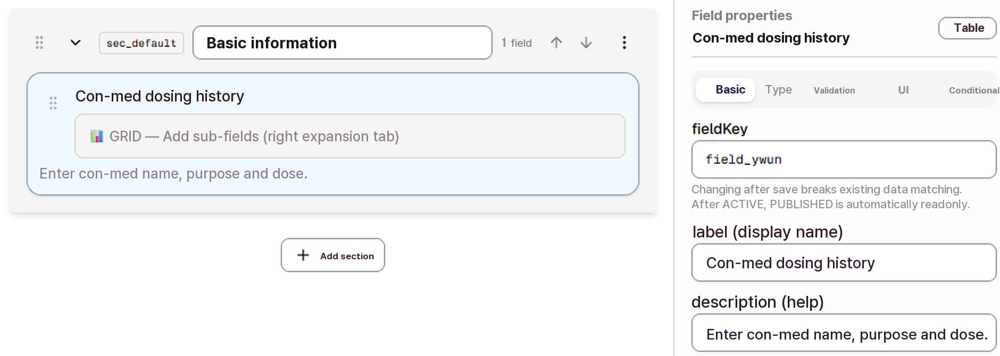
label (display name) — Enter the title to show above the table. The capture uses Con-med dosing history.
It is shown as the table title on the canvas. It is a different layer from the column names — column names are set separately in the Type settings tab. 3.3
description (help) — Enter the supporting description to show below the table. If left blank, nothing is shown.
It is shown in gray text below the table. The capture uses “Enter con-med name, purpose and dose.”
fieldKey — The key under which the whole table is stored. It is assigned automatically when the field is added, like field_ywun, and as the on-screen notice says, “Changing after save breaks existing data matching”.
Precautions
Must check Data corruption · Form cannot be completed
- • State in the display name what the table collects. “Dosing history” alone does not tell whether it is the study drug or a concomitant medication, so records of a different nature get mixed in the same table.
- • Write in the help what to do when there are no entries. A table has no box for showing “None” — an empty table and a table nobody has asked about yet look the same. The author must design for this, for example by adding a “Not applicable” column or placing a Yes/No question before the table. Ch. 6
- • Do not change fieldKey after saving. The link to data already entered is broken, and the validation rules 4.3 and conditional display Ch. 6 that reference this field break as well.
Easily misunderstood behavior
- • The display name (label) can be changed at any time. It does not affect stored values.
2.2Required
Overview
Sets whether this table must be filled for the form to be completed. Table has Required on two layers — the whole-table Required here, and per-column Required in the Type settings tab 3.3. Each takes effect separately, and the column side works more strongly.
Screen guide
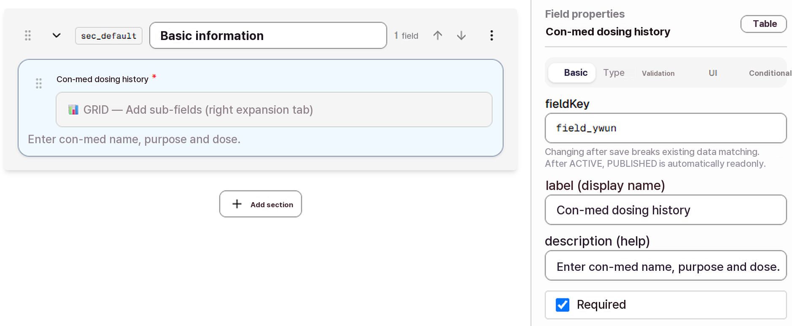
* next to the display name on the canvasRequired — When selected, this table becomes a required item. If there is not a single row, the form cannot be completed.
A red * to the right of the table title is shown on the canvas. Only one mark appears, next to the title — the asterisks on each column are set separately in 3.3.
label · description — The values entered in 2.1 are shown as they are.
Precautions
Must check Data corruption · Form cannot be completed
- • ⛔ If even one column is required, the table must be filled even if this checkbox is off. The system automatically puts tables with required columns into the required-item count — clearing whole-table Required does not make it skippable. 3.3
- • ⛔ If you add a row and leave it empty, the form is not completed. The system checks, row by row, whether the required columns are filled. If one empty row remains, the table is incomplete — delete rows you will not use. 3.3
- • There is no way to express “Not applicable”. This type cannot enable the not-measured declaration, so before making it required, first decide how to record subjects with no concomitant medications. Usually you place a Yes/No question before it and link them with conditional display. Ch. 6 · 7.2
Easily misunderstood behavior
- • Hidden fields are excluded from the required check. While hidden by conditional display Ch. 6, the form is completed with the field empty even if it is required.
2.3SDV target (CRA source data check)
Overview
SDV (Source Data Verification) is the procedure in which the clinical research associate (CRA) checks entered values against the site's source data. Here you decide whether this field is a target of that procedure. This setting is the same for all field types, so the screen is also the same regardless of type.
Screen guide


SDV target (CRA source data check) — When selected, this field is included in the CRA's check list. The unit of assignment is the whole table; it cannot be set per column.
When it becomes selected, the sub-item is enabled.
Verification required (if unverified, quality PENDING) — Can be set only after ① is selected. When selected, the quality status of the data stays at PENDING until the CRA finishes the check.
Before ① is selected, ② is grayed out and disabled. As the on-screen notice says, “Set the field as a verification target first to choose whether verification is required.”
Precautions
Must check Data corruption · Form cannot be completed
- • ⛔ The most important check item in a table is “missing rows”. Dosing records that are in the source data but not in the table are more dangerous than whether the rows written are correct — the system has no way of knowing about missing rows, so it relies entirely on the CRA's check.
- • ⛔ The more rows there are, the greater the checking burden. Before adding too many columns, confirm that each item can really be checked. 3.3
Easily misunderstood behavior
- • Verification is cleared when a value changes. Correcting even one cell in one row returns the quality status of the whole table to PENDING, and the CRA must check it again.
Note
- • The quality status progresses in the order PENDING → VERIFIED → CLEAN. If even one field marked verification required is unverified, the data cannot become CLEAN.
Type settings tab — column definition (the core of this type)
- 3.1Initial state with no columns
- 3.2Adding a column
- 3.3Column settings — completing the table
3.1Initial state with no columns
Overview
This is the most important tab for Table. The Type settings tab of other types has items such as length · range · default value, but Table has only column definition. This is because what the table accepts is decided entirely here.
Screen guide
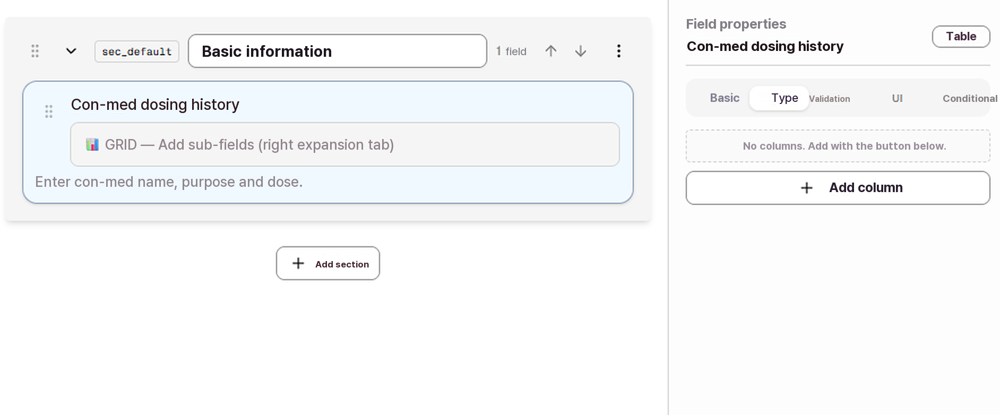
[+ Add column] — Creates the first column. The screen after selecting it is explained in 3.2.
When there are no columns, the notice “No columns. Add with the button below.” is shown.
The same state appears on the canvas — “GRID — Add sub-fields (right expansion tab)”. The table is not drawn yet.
Type badge “Table” — The type of the field being set up.
Property tabs — Currently the Type settings tab.
Precautions
Must check Data corruption · Form cannot be completed
- • ⛔ Until columns are created, there is no value to store. If you publish in this state, recorders see only a notice and cannot enter anything. 1.1
Easily misunderstood behavior
- • There is no default value (defaultValue) item. A table holds multiple values, so no way to prefill it is provided — this differs from Single-line text · Number, etc. 7.2
- • There is no auto calculation (calculation) item either. Computing the whole table as a single number does not apply. If you need a total, add a separate Number field. 7.2
- • There is no item for setting a minimum · maximum number of rows. If the number of rows must be limited, give guidance in the help and check it at the SDV stage. 2.1 · 2.3
3.2Adding a column
Overview
When you add one column, a table appears on the canvas at that moment. One column is one column of the table, and each column has its own name · storage key · input method. In other words, think of each column as a small field.
Screen guide
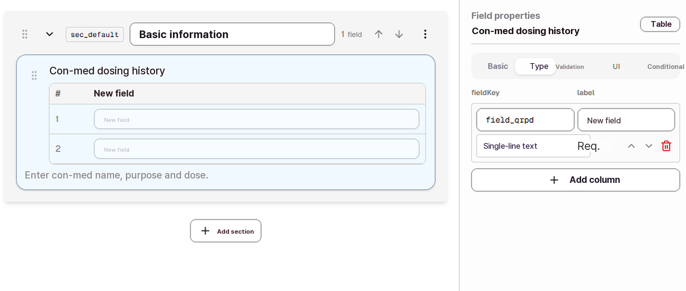
[+ Add column] — Creates one more column. Columns increase by the number of times you select it.
A table is drawn on the canvas. ⚠ The 2 rows you see are a preview example — the actual entry screen starts with 1 row, and the recorder adds more with [Add row]. 1.1
fieldKey — The key under which that column's value is stored. It is assigned automatically, like field_qrpd, and is used only inside the table.
label — The column name. Initially it is New field.
It is shown as the table header. On the entry screen, the same value is also used as the hint text inside the cell. 5.4
Type — The input method of that column. Initially it is Single-line text. You can choose from 9 types — Single-line text · Number · Date · Date-time · True/False · Single choice · Multi-select · Phone · Email.
Required — Sets whether that column must be filled. 2.2 · 3.3
Move order (∧ ∨) and Delete — Change the left-to-right order of columns or remove one.
Precautions
Must check Data corruption · Form cannot be completed
- • ⛔ Do not mistake the 2 rows on the canvas for a row-count setting. The table on the authoring screen is only an example showing the shape; the number of rows is decided by the recorder. 1.1
- • ⛔ Multi-line text · File upload · Address · Scale cannot be columns. These types do not fit in a single cell, so they are excluded from the list — if you need such an item, add it as a separate field outside the table. 1.1
Easily misunderstood behavior
- • A column fieldKey is valid only inside the table. Columns cannot be referenced directly from another field's validation rules 4.3 or conditional display Ch. 6. 7.2
Note
- • The column order is the table's column order. Arrange them in the order the recorder reads — you can change it later with ∧ ∨.
3.3Column settings — completing the table
Overview
For each column, set four things: storage key · name · input method · whether required. The capture shows the “Con-med dosing history” table completed with three columns: Drug · Used for · Single dose. Only Drug and Single dose are required; “Used for” is optional.
Screen guide
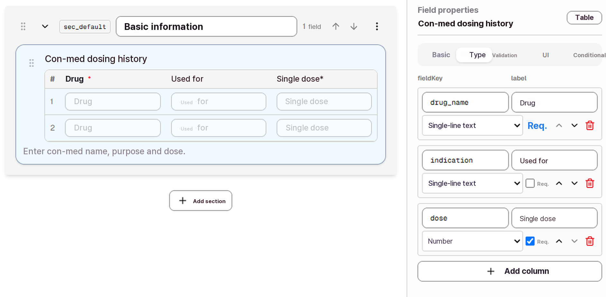
* is added to the header of required columnsfieldKey — If you change the auto-assigned key to a meaningful name such as drug_name, the exported data is easier to read.
label — The column name. The capture uses Drug.
The table header changes to that name.
Type — The three columns in the capture are Single-line text · Single-line text · Number. Single dose needs numeric comparison and aggregation, so it is set to Number.
Required — In the capture, only Drug and Single dose are selected.
A red * next to the header is added to columns set as required. “Used for” does not have one.
Second column — indication / “Used for” / Single-line text / not required.
Third column — dose / “Single dose” / Number / required.
[+ Add column] — Adds more columns.
The # column is the row number. The system adds it automatically; it is not something you author.
Precautions
Must check Data corruption · Form cannot be completed
- • ⛔ Column Required works more strongly than whole-table Required. If even one column is required, the table is included in the required-item count even with “Required” in the Basic tab turned off, and each row is checked for whether that cell is filled. 2.2
- • ⛔ Finalize fieldKey before publishing. If you change it after saving, only the values already entered in that column lose their link — the table remains with just one column empty, which is hard to notice. 2.1
- • Always set numeric values to the Number type. If you collect them as Single-line text, units get mixed in, like
500mg, and you can neither aggregate nor compare. Put the unit in the column name (e.g.Single dose(mg)).
Easily misunderstood behavior
- • Using choice columns makes entries consistent. For items with fixed options, such as “Used for”, setting them to Single choice reduces cases where the same meaning is written differently. 3.2
Validation tab — checking values before saving
- 4.1No validation rules
- 4.2Adding a rule
- 4.3Completed rule — Compare with another field
4.1No validation rules
Overview
This tab collects rules that check whether a value meets conditions before saving. For Table, this tab has a very narrow range of use — a table's value is a bundle of multiple rows, so checks such as length·range do not apply. There are no rules in this tab that check each cell. 4.2
Screen guide
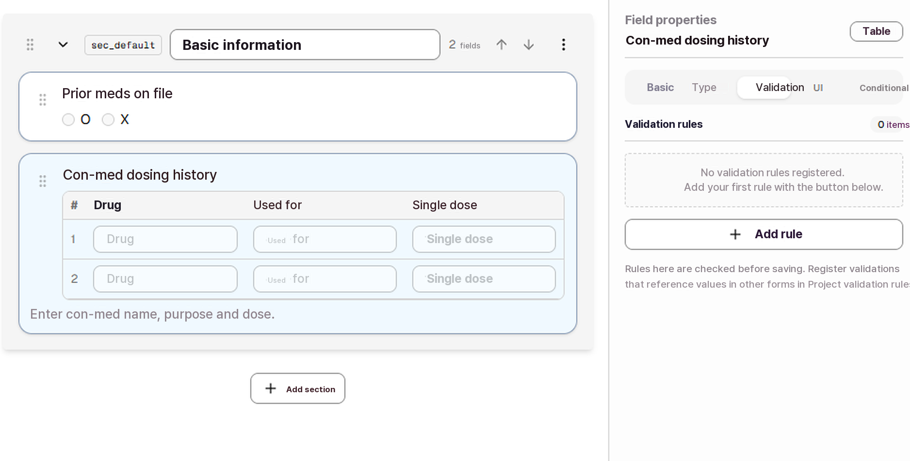
[+ Add rule] — Creates the first rule. The screen after selecting it is explained in 4.2.
The Validation rules area and the number of registered rules. Initially it is 0 items.
When there are no rules, the notice “No validation rules registered. Add your first rule with the button below.” is shown.
Notice at the bottom — “Rules here are checked before saving. Register validations that reference values in other forms in Project validation rules.”
Precautions
Must check Data corruption · Form cannot be completed
- • ⛔ Per-column checks cannot be created in this tab. There is no place to set a rule such as “Single dose must be greater than 0” — rules in this tab treat the whole table as one value. What you can control per column is only the type and Required. 3.3
- • ⛔ There are no checks comparing rows with each other either. Even if the same drug is entered in two rows, the system cannot catch it — a person must check it at the SDV stage. 2.3
- • ⛔ Validations that reference values in other forms cannot be created here. Register such rules on the “Project validation rules” screen — however, even on that screen a Table field cannot be chosen as a reference target. 7.2
Easily misunderstood behavior
- • The capture has two fields: “Prior meds on file” (Single choice) and “Con-med dosing history” — whether the table is collected depends on the answer to the first field, so 4.3 covers a rule that links the two fields.
4.2Adding a rule
Overview
Selecting [+ Add rule] in 4.1 creates a Rule 1 block. Initially “Value range” is set, but a table's value is not a number but a bundle of rows, so size comparison does not apply. Change it to “Compare with another field” — the only kind usable for a table. 4.3
Screen guide
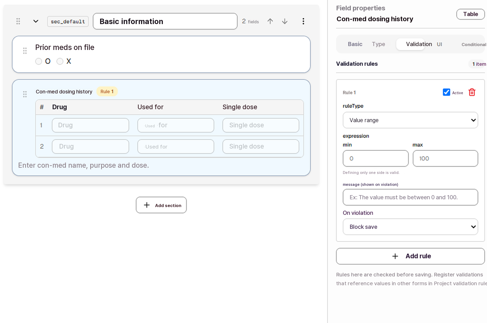
[+ Add rule] — Creates one more rule. (It is the same button you selected in 4.1.)
A “Rule 1” badge is shown next to the table title on the canvas.
The number of rules changes to 1 item.
Active checkbox and Delete icon — You can pause a rule without deleting it.
ruleType — The kind of rule. Right after creation it is “Value range”, so be sure to change it to “Compare with another field”.
min — The lower-limit box that appears when Value range is chosen.
max — The upper-limit box that appears under the same condition.
message (shown on violation) — The message shown to users when the rule is violated.
On violation — Select either Block save or Warning. (Depending on ruleType, it may not be selectable — 4.3)
The faint 0 · 100 and “Defining only one side is valid.” are guidance for Value range, not set values.
Precautions
Must check Data corruption · Form cannot be completed
- • ⛔ “Value range” cannot limit the number of rows. min · max check the size of a value, not the number of rows, and a table's value is not a number, so nothing happens — it does not raise an error either, so you move on believing a rule is in place.
- • ⛔ Do not apply “Format (regex)” to a table — saving stays blocked for good. The regex converts the whole bundle of rows into a fixed internal string before checking, so whatever expression you set, it becomes a violation the moment even one row is added, and the recorder has no way to save the form.
- • ⛔ “Decimal places” does not work either. Even if you want to limit the decimal places of Single dose, this tab cannot reach the columns. 4.1
- • If message is left blank, users cannot tell why saving was blocked. Be sure to enter it.
4.3Completed rule — Compare with another field
Overview
Changing ruleType to Compare with another field checks the value against the value of another field in the same form. It can express a relationship where whether the table is collected depends on the answer to an earlier question, such as “collect the table only if prior meds were reported as on file”, and it is the only rule that works properly for a table. The comparison target must be another field that is not a table — read the precautions below.
Screen guide
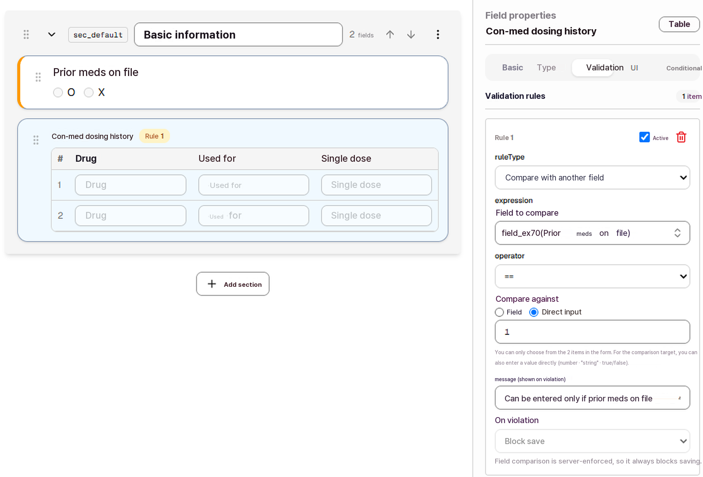
1ruleType = Compare with another field — When selected, the boxes below change for comparison.
Field to compare — Select another field in the same form. The capture uses field_ex70(Prior meds on file), a Single choice field placed before the table. ⚠ Do not choose the table itself here.
operator — The comparison method. The capture shows == (equals).
Compare against — Select either Field or Direct input. The capture uses Direct input with 1 — the stored value of “Prior meds on file”.
message (shown on violation) — The capture uses Can be entered only if prior meds on file was checked.
On violation — Grayed out and disabled. As the on-screen notice says, “Field comparison is server-enforced, so it always blocks saving.” — for this rule, Warning cannot be chosen and it is fixed to Block save.
On-screen notice — “You can only choose from the 2 items in the form. For the comparison target, you can also enter a value directly (number · "string" · true/false).” This list also includes the table itself, so be careful when choosing.
Precautions
Must check Data corruption · Form cannot be completed
- • ⛔ If you choose the table itself as the field to compare, saving is blocked permanently. A table's value is a bundle of rows and can never equal
1, so it becomes a violation the moment even one row is added. The entry screen starts with 1 row from the beginning, so the recorder is blocked before even touching it. 3.2 - • ⛔ Put the stored value, not the on-screen text, in the comparison target. “Prior meds on file” appears on screen as
O·X, so first check in that field's option list that the stored value really is1— if it differs, saving is blocked even when it is checked. - • The same relationship can also be built with conditional display 6.2. If you set both, they duplicate each other — not asking and also blocking saving — so use only one. For a table, conditional display is recommended. 6.1
Easily misunderstood behavior
- • The reference key and string differ from the 6.2 capture. The two screens were captured at different times, so only the auto-assigned key (
field_ex70·field_8y7i) changed; both point to “Prior meds on file”. 2.1
UI tab — screen layout and guidance text
- 5.1UI tab layout
- 5.2Layout width
- 5.3Read-only · hidden
- 5.4placeholder · helpText
5.1Overall layout
Overview
This tab sets how the field is laid out and guided on screen, not the value itself. Settings in this tab do not change the stored data itself. For Table, Layout width is especially important — a table is wide, so it is the first to break down when the width is reduced. 5.2
Screen guide
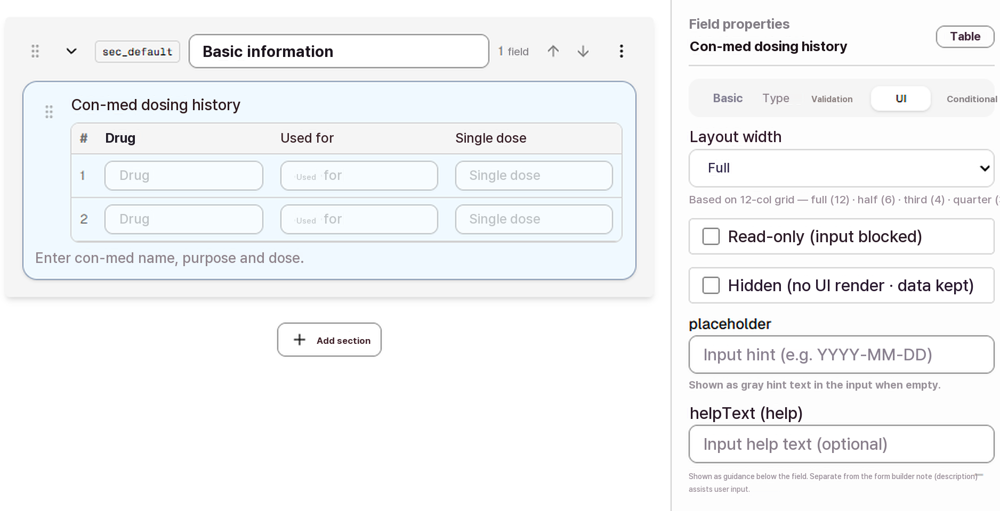
Layout width — The width this table takes up in one row of the form. 5.2
Read-only (input blocked) — Shows the table but prevents changes. The add-row · delete-row buttons disappear as well. 5.3
Hidden (no UI render · data kept) — Hides it from the screen. The whole table disappears. 5.3
placeholder — Does not apply to Table. The hint text in cells uses the column name as is, so it cannot be changed here. 5.4
helpText (help) — Guidance text shown below the table. This one works correctly. 5.4
Type badge “Table”
Precautions
Must check Data corruption · Form cannot be completed
- • ⛔ Entering a placeholder does not change the screen. The “Drug” · “Used for” · “Single dose” shown in the cells are column names — to change them, edit the column label in the Type settings tab. 3.3 · 5.4
- • ⛔ Hidden does not delete stored rows. They are hidden only on screen; the values remain and are included in exports and the audit trail. 5.3
Easily misunderstood behavior
- • Settings in this tab do not change stored values. Only the layout and guidance change.
Note
- • Do not use Read-only and Hidden together. Hidden takes precedence, so the Read-only setting has no effect. 5.3
5.2Layout width
Overview
Sets the width this table takes up in one row of the form. Table divides the given width again by the number of columns, so reducing the width makes it unreadable faster than any other type.
Screen guide
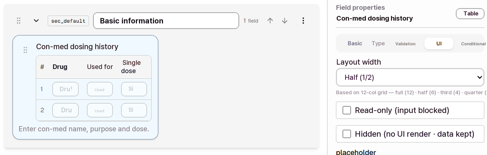
Layout width — Select from Full · Half (1/2) · 1/3 · 1/4.
As the table shrinks to half width, the header “Single dose” wraps to two lines and the cell hint text is cut off, like Dru! · Used, so you cannot tell what the box is for. This happens even with only three columns.
Based on 12-col grid — As the on-screen notice says, “full (12) · half (6) · third (4) · quarter (3)”. The table divides this width again by the number of columns, so the effective width is much narrower.
Precautions
Must check Data corruption · Form cannot be completed
- • ⛔ Always keep Table at full width. At half width the header already wraps and the cell text is cut off — at 1/3 · 1/4 it becomes unusable as a table.
- • ⛔ The more columns, the faster it breaks down. If you plan to have 5 or more columns, it may become narrow even at full width, so keep only the columns you really need. 3.3
Easily misunderstood behavior
- • Only the hint text is cut off; the boxes still work. Input and saving work correctly — it just looks narrow, which makes it all the harder to notice.
Note
- • If not set, full width is applied.
5.3Read-only · hidden
Overview
These settings show the table but prevent changes, or hide it from the screen while keeping the values. Neither deletes stored rows, and both apply to the whole table — there is no setting that locks or hides only specific columns.
Screen guide
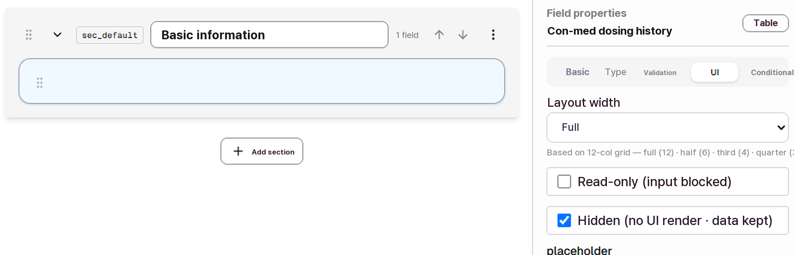
Read-only (input blocked) — When selected, the table is shown but the recorder cannot edit it. The [Add row] button and the delete-row icon disappear as well.
Hidden (no UI render · data kept) — When selected, this table is not shown on the entry screen.
Only an empty border remains of the canvas card. Neither the title nor the table is shown.
Layout width — The value set in 5.2.
Precautions
Must check Data corruption · Form cannot be completed
- • ⛔ Do not use Hidden to cover rows entered by mistake. The values remain and are included in exports and the audit trail — if a record must be removed, delete that row instead of hiding it. 4.3
- • ⛔ With Read-only, the recorder cannot add rows. In other types it means roughly “view only”, but for a table, recording itself becomes impossible — use it only when showing data brought in from elsewhere.
Easily misunderstood behavior
- • To hide the field depending on a condition, use conditional display. Hidden in this tab always hides the field. Ch. 6
Note
- • If Hidden and Read-only are both selected, Hidden takes precedence.
5.4placeholder · helpText
Overview
Sets the guidance text shown inside and below the input box. For Table, the two items have different fates — helpText works correctly, but placeholder does not apply. The capture is the proof.
Screen guide
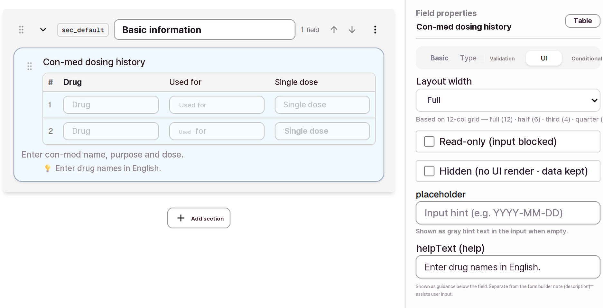
placeholder — Faint text shown in the input box when there is no value. In the capture it is blank, and only the hint “Input hint (e.g. YYYY-MM-DD)” is visible.
Even so, “Drug” · “Used for” · “Single dose” are already shown in the table cells. This text is not the placeholder but the column name (label) used as is; to change it, edit the column label in the Type settings tab. 3.3
helpText (help) — Guidance text shown below the table. The capture uses “Enter drug names in English.”
It is shown below the table with a 💡 icon. This one works correctly.
description (help) — The text entered in 2.1. It is a different item from helpText and is shown on the line above without an icon.
Precautions
Must check Data corruption · Form cannot be completed
- • ⛔ Text written in placeholder is not shown anywhere. The cell hint is the column name, so this box cannot change it — if you write it here, guidance you believe is set never reaches the recorder. 5.1
- • Work per-column guidance into the column name. If a unit or format matters, writing it in the name itself, like
Single dose(mg), is the only method available in a table. 3.3
Easily misunderstood behavior
- • Write guidance for the whole table in helpText. Writing “Enter drug names in English.” as in the capture reduces inconsistent spelling — since it cannot be enforced by validation 4.1 · 4.2, this text is effectively the only means of control.
- • description and helpText are shown together. If you enter both, they make two lines, so do not write the same content twice. 2.1
Conditional tab — showing a field based on another value
- 6.1Enabling conditional display
- 6.2Setting the condition
6.1Enabling conditional display
Overview
This function shows or hides this table depending on the value of another field. It suits Table especially well — a table has no box for showing “None” 2.1, so not asking at all based on the answer to an earlier question is the cleanest solution.
Screen guide
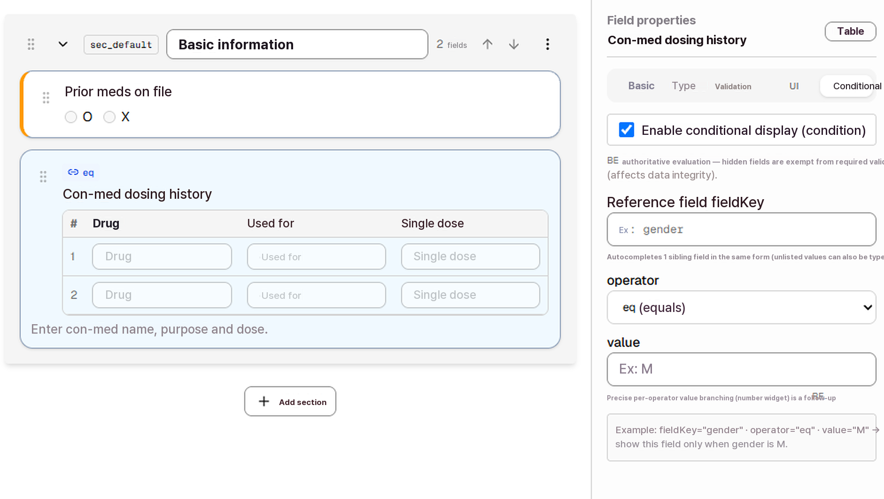
Enable conditional display (condition) — When selected, the condition settings below appear.
A 🔗 eq badge is shown above the table on the canvas to indicate that a condition is applied.
Reference field fieldKey — Another field in the same form on which the condition is based. Sibling fields in the same form are autocompleted, and you can also type a value not in the list.
operator — The comparison method. The default is eq (equals).
value — The value to compare. Enter the stored value of the reference field. 6.2
⚠ On-screen notice — “Hidden fields are exempt from required validation (affects data integrity).” The condition is evaluated by the system.
Example at the bottom — fieldKey="gender" · operator="eq" · value="M" → show this field only when gender is M.
Precautions
Must check Data corruption · Form cannot be completed
- • ⛔ Setting a condition exempts the field from required validation. While hidden because the condition is not met, the form is completed with the table empty, even if the table is required and even if it has required columns. 2.2
- • ⛔ If the condition becomes false after rows have been entered, the table disappears from the screen. The rows remain, so if the answer to the earlier question is changed later, the remaining rows must be deleted separately. 5.3
Easily misunderstood behavior
- • A table has no box for writing “None”. If you place a Yes/No question before it and make this table conditional on it, the table is not shown to subjects to whom it does not apply, so an empty table can be told apart from an unrecorded one. 2.1 · 2.2
Note
- • If you enable the condition and leave the reference field blank, the condition is never met. Be sure to fill in all of ②–④. 6.2
6.2Setting the condition
Overview
This is the state after the condition enabled in 6.1 has been fully entered. With this setting, the table is shown on screen only when the value of the “Prior meds on file” field is 1. It expresses the same relationship as the validation rule in 4.3 in a different way — instead of blocking saving, it does not ask at all. Compare the two screens side by side.
Screen guide
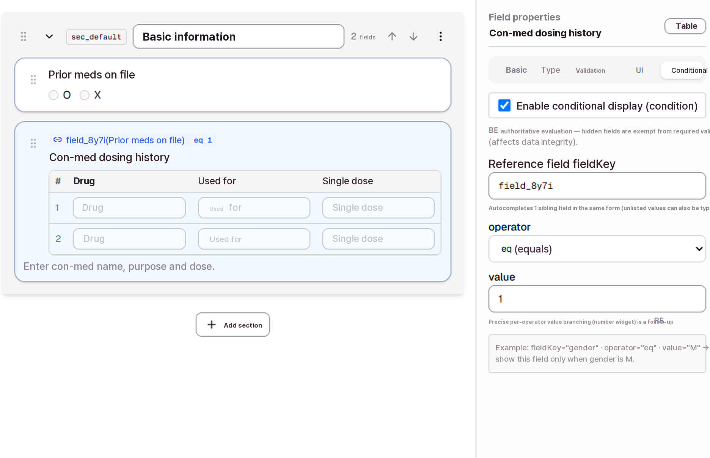
Prior meds on file is 1Reference field fieldKey = field_8y7i — Points to the “Prior meds on file” field in the same form. It points to the same field as the validation rule 4.3, but the captures were taken at different times, so only the auto-assigned key string differs. 4.3
Result of entering all of ①–③ — the canvas badge becomes specific: 🔗 field_8y7i(Prior meds on file) eq 1.
operator = eq (equals)
value = 1 — Enter the stored value of that option, not the O shown on screen.
⚠ On-screen notice — “Hidden fields are exempt from required validation (affects data integrity).”
Example at the bottom — fieldKey="gender" · operator="eq" · value="M" → show this field only when gender is M.
Precautions
Must check Data corruption · Form cannot be completed
- • ⛔ Enter the stored value in value, not the on-screen text. If you write
Obecause “Prior meds on file” appears on screen asO·X, the condition is never met and the table is never shown. First check the stored value in the option list of the field you reference. - • ⛔ Changing the stored value of the reference field silently breaks the condition. If the stored value is changed from
1toY, this condition simply stops being met without any error — that is why changing stored values after publishing is risky. - • The same relationship can also be built with a validation rule 4.3. If you set both, they duplicate each other — not asking and also blocking saving — so use only one. For a table, conditional display is recommended. 6.1
Easily misunderstood behavior
- • After setting it, check in Preview. You must change the reference value back and forth and confirm that the table actually appears and disappears.
Appendix
- 7.1Settings by tab at a glance
- 7.2Must remember · not covered
7.1Settings by tab at a glance
Settings by tab
| Tab | Item | What it sets | Section |
|---|---|---|---|
| Basic | fieldKey | One key under which the whole table is stored (do not change after saving) | 2.1 |
| label (display name) | Title shown above the table — a different layer from column names | 2.1 | |
| description (help) | Supporting description below the table — write what to do “when there are no entries” | 2.1 | |
| Required | Whether at least 1 row is needed — ⚠ column Required is stronger | 2.2 | |
| SDV target | Whether it is a CRA source data check target — the only stage that finds missing rows | 2.3 | |
| Type settings | Column fieldKey | Storage key of that column — finalize before publishing | 3.3 |
| Column label | Table header and cell hint text (replaces placeholder) | 3.3 · 5.4 | |
| Column type | Input method of that column — 9 types (numeric values must be Number) | 3.2 · 3.3 | |
| Column Required | ⚠ Checked row by row for whether that cell is filled | 3.3 | |
| Validation | ruleType | Only “Compare with another field” works | 4.2 · 4.3 |
| Format (regex) | ⛔ If applied, saving stays blocked for good — do not use | 4.2 | |
| Value range · Decimal places | ⛔ Silently does nothing — does not limit the number of rows | 4.2 | |
| Field to compare | ⛔ Choosing the table itself blocks saving permanently | 4.3 | |
| UI | Layout width | ⚠ Always Full — the header already wraps at half width | 5.2 |
| Read-only | Shown but not editable — the add-row button also disappears | 5.3 | |
| Hidden | Not shown on screen — stored rows remain as they are | 5.3 | |
| placeholder · helpText | ⛔ placeholder is not applied · only helpText works | 5.4 | |
| Conditional | Condition active | Whether conditional display is used (exempt from required validation) | 6.1 |
| Reference field fieldKey | Field in the same form on which the condition is based | 6.2 | |
| operator · value | Comparison method and value to compare (enter the stored value) | 6.2 |
Required has two layers — which one works how
| Setting | Where | What it checks | Can it be skipped when turned off? |
|---|---|---|---|
| Whole-table Required | Basic tab “Required” 2.2 | Whether there is at least 1 row | Yes — only when no column is required |
| Column Required | Type settings tab column “Required” 3.3 | Whether that cell is filled in each row | No — the table is counted even if whole-table Required is off |
7.2Must remember · not covered
Must remember
Must check Data corruption · Form cannot be completed
- • Do not choose the table itself as the “Field to compare” in the Validation tab. It appears in the list, but if chosen, adding even one row causes a violation and saving is blocked permanently. 4.3
- • Do not apply “Format (regex)” either. For the same reason, anything entered causes a violation. 4.2
- • If even one column is required, the table cannot be skipped even with whole-table Required off. On top of that, each row is checked for whether that cell is filled — delete empty rows. 2.2 · 3.3
- • Keep Layout width at Full. At half width the header already wraps to two lines and the cell text is cut off. 5.2
- • If you do not define columns, nothing can be entered. If no table is visible on the canvas, that is the state. 1.1 · 3.1
- • Text written in placeholder is not shown anywhere. The cell hint is the column name, so edit the column label. 3.3 · 5.4
- • Always set numeric columns to the Number type. If collected as text, units get mixed in and you can neither aggregate nor compare. 3.3
Easily misunderstood behavior
- • The 2 rows on the canvas are a preview. The actual entry screen starts with 1 row, and the recorder adds more with [Add row]. 3.2
- • There is no box for writing “Not applicable”. The standard solution is to place a Yes/No question before the table and link them with conditional display. 2.1 · 6.1
- • There are no rules that check each cell. What you can control per column is only the type and Required. 4.1
Note
- • With Read-only, the add-row button disappears. For a table, it is not “view only” — recording itself becomes impossible. 5.3
Not covered in this document
※ Allow not-measured declaration — The item itself is not shown in the Basic tab. A table holds multiple values, so declaring “cannot be confirmed” as a single entry does not apply. That is why this manual has no not-measured section. Handle cases that do not apply with conditional display. 1.1 · 6.1
AE semantic role — The item itself is not shown in the Basic tab. The adverse event role is assigned to a Yes/No or Single choice field and cannot be assigned to a table. 1.1
Minimum · maximum number of rows — There is no item for setting them. The only constraint on deleting rows is that the last remaining row cannot be deleted. If you need a row-count criterion, give guidance in the help and check it in SDV. 3.1
Default value (defaultValue) — There is no item in the Type settings tab. A table holds multiple values, so no way to prefill it is provided. 3.1
Auto calculation (calculation) — There is no item in the Type settings tab. Computing the whole table as a single number does not apply. If you need a total, add a separate Number field. 3.1
Validations · conditions that reference columns — A column fieldKey is valid only inside the table, so it cannot be referenced directly from another field's validation rules or conditional display. 3.2 · 4.1
References in project validation rules — On the “Project validation rules” screen, which looks at values in other forms, a Table field cannot be chosen as a reference target. Its value is a bundle of rows, and cell-level paths are not supported yet. 4.1
Types that cannot be used as columns — Multi-line text · File upload · Address · Scale, and all containers such as tables · groups. They do not fit in a single cell, so they are excluded from the list. 3.2